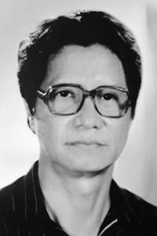
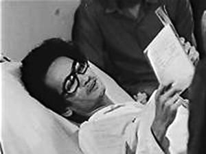
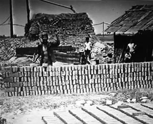
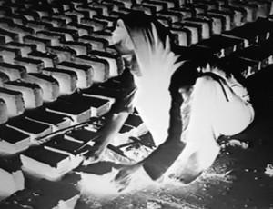
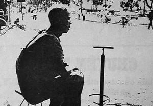

Từ rất xa xưa, cha bác có dạy rằng: Tử tế có trong mỗi con người, mỗi nhà, mỗi dòng họ, mỗi dân tộc. Hãy bền bỉ đánh thức nó, đặt nó lên bàn thờ tổ tiên hay trên lễ đài của Quốc gia. Bởi thiếu nó, một cộng đồng dù có những nỗ lực tột bực và chỉ hướng cao xa đến mấy thì cũng chỉ là những điều vớ vẩn. Hãy hướng con trẻ và cả người lớn đầu tiên vào việc học làm người, người tử tế trước khi mong muốn và chăn dắt họ trở thành những người có quyền hành, giỏi giang, hoặc siêu phàm...
☆
Trong khi đang bị công an theo dõi, đang lận đận vì “Hà Nội Trong Mắt Ai” thì Trần Văn Thủy cả gan làm phim “Chuyện Tử Tế”, một bộ phim còn đốp chát trực diện hơn, không ẩn dụ nhẹ nhàng như “Hà Nội Trong Mắt Ai”.
Cái “tội” đó thì chỉ có thần linh giúp cho mới thoát nổi.
Bộ phim này cũng gian nan chìm nổi không kém thằng anh nó, “thằng” Hà Nội Trong Mắt Ai.
Sinh sau đẻ muộn cho nên nó ma lanh hơn nhưng cũng điêu đứng hơn.
Câu chuyện làm bộ phim “Chuyện Tử Tế” cũng khá ly kỳ, chứa đựng khá nhiều thông tin đáng để suy ngẫm.

Trong khi đang bị công an theo dõi, đang lận đận vì “Hà Nội Trong Mắt Ai” thì Trần Văn Thủy cả gan làm phim “Chuyện Tử Tế”
Sách báo nói quá nhiều về những gì xung quanh cuốn phim “Chuyện Tử Tế”. Nhưng bản thân cuốn phim đó mặt mũi ra sao mà ồn ĩ vậy? Không phải mọi người đều đã xem hoặc có thì giờ để xem lại cuốn phim này, vì thế ta thử “xem lại” cuốn phim “Chuyện Tử Tế” qua lời bình của phim, nó chỉ là một nửa nhưng là hồn cốt của bộ phim.
Lời bình phim “Chuyện Tử Tế”
CUỐN 1
(Quyển sách mở, bút lông ngỗng...)
Có lần, tranh luận về việc làm phim, bạn tôi bực mình, mắng tôi một câu nghe rất lạ tai:
(Chữ viết)
“...Tất nhiên, chỉ có súc vật mới có thể quay lưng lại nỗi đau khổ của con người, và chăm lo riêng cho bộ da của mình...”
(Bút lông ngỗng)
Chữ nghĩa đến là nóng nảy, táo tợn – Tôi ngờ rằng lời lẽ ấy, bạn tôi đã vay mượn ở đâu đó.
(Tên phim)
“Chuyện Tử Tế”
(Tên các tác giả xen kẽ hình ảnh)
Người biên tập bộ phim này cho hay: Từ rất xa xưa, cha bác có dạy rằng:
Tử tế có trong mỗi con người, mỗi nhà, mỗi dòng họ, mỗi dân tộc. Hãy bền bỉ đánh thức nó, đặt nó lên bàn thờ tổ tiên hay trên lễ đài của Quốc gia. Bởi thiếu nó, một cộng đồng dù có nỗ lực tột bực và chỉ hướng cao xa đến mấy thì cũng chỉ là những điều vớ vẩn.
Hãy hướng con trẻ và cả người lớn đầu tiên vào việc học làm người – Người tử tế, trước khi mong muốn và chăn dắt họ trở thành người có quyền hành, giỏi giang hoặc siêu phàm.
(Những người đi viếng mộ)
Hôm nay, 20 tháng 4 âm lịch – Ngày giỗ đầu một bạn đồng nghiệp của chúng tôi – Cũng không hiểu sao, đồng nghiệp của chúng tôi qua đời trong những năm qua, phần đông đều do một căn bệnh hiểm nghèo: Bệnh ung thư.
Nhà quay phim Nguyễn Quý Nghĩa, Nguyễn Quang Trình, nhà biên kịch Quang Minh, đạo diễn Tô Cương, nhà quay phim Phan Trọng Quỳ, đạo diễn Trần Thịnh, đạo diễn Xuân Thành và bây giờ là Ðồng Xuân Thuyết nữa.
Chúng tôi đã theo Thuyết gần hai năm trước khi anh qua đời. Vào những giờ phút cuối, anh bình thản nói:
( Thuyết nói với bạn bè)
“Mấy ngày hôm nay tớ đau kinh khủng, như xé ruột. Nhưng những lúc đỡ, đọc cuốn sách này tớ thấy hay quá. Ðọc thử các cậu nghe một đoạn nhé!

...đọc cuốn sách này tớ thấy hay quá… các cậu nghe một đoạn nhé!
☆
“...Tâm hồn con người nặng gấp trăm lần thể xác – Nó nặng đến nỗi một người không mang nổi. Bởi thế người đời chúng ta chừng nào còn sống hãy cố gắng giúp nhau để cho tâm hồn trở nên bất tử. Ông giúp cho tâm hồn tôi sống mãi, tôi giúp người khác, người khác lại giúp người khác nữa, và cứ như thế cho đến vô cùng... Sao cho cái chết của một người không đẩy ta vào tình trạng cô đơn trong cuộc sống...”. Các cậu có thấy lạ không chứ!
(Bạn bè khiêng quan tài Thuyết – Tiếng nói của Thuyết lặp lại trên hình đám ma của mình).
“...Tâm hồn con người nặng gấp trăm lần thể xác. Nó nặng đến nỗi một người không mang nổi. Bởi thế người đời chúng ta chừng nào còn sống hãy gắng giúp nhau để cho tâm hồn trở nên bất tử. Ông giúp cho tâm hồn tôi sống mãi, tôi giúp người khác, người khác lại giúp người khác nữa, và cứ như thế cho đến vô cùng... Sao cho cái chết của một người không đẩy ta vào tình trạng cô đơn trong cuộc sống.”
(Thuyết nói với bạn bè)
- Nếu tớ khỏe, tớ về với các cậu thì lại vui như Tết. Nhưng chẳng may thì... cũng chẳng ân hận lắm, vì lúc sống chúng mình ăn ở với nhau rất là tử tế đấy chứ!
- Thế nhỡ chẳng may, thì cậu có “Dối dăng” gì không?
- “Dối dăng” thì tớ sợ nhiều việc rồi các cậu cũng quên đi mất - Mấy ngày nay tớ cứ nghĩ là các cậu nên làm với nhau một cái gì đó - Một cái gì đó bắt đầu từ tình thương yêu con người, đi từ nỗi đau của con người chẳng hạn.
- Khó đấy!
- Khó cũng phải làm. Các cậu mà vô tích sự, tớ đi trước là tớ lôi các cậu xuống đấy.
(Bầu trời. Ðọc lại lời của Thuyết)
“...Cũng chẳng ân hận lắm, bởi lúc sống chúng mình ăn ở với nhau rất là tử tế đấy chứ... Tớ cứ nghĩ, các cậu nên làm với nhau một cái gì đấy - Một cái gì đấy bắt đầu từ tình thương yêu con người, đi từ nỗi đau của con người.”
Không có gì thành thật bằng lời nói của người sắp qua đời.
( Ðoàn làm phim quay bên lò gạch )
Từ đấy chúng tôi định bụng rủ nhau đi làm một bộ phim tử tế - Tử tế dù là tương đối.
Nhưng việc có lẽ không thành, bởi một hôm chẳng rõ vì đâu người làm gạch bất bình xăm xăm chạy ra, xua đuổi chúng tôi té tát:
“... Xin các ông đi chỗ khác cho chúng tôi nhờ. Không có quay quắt gì ở cái lò gạch của tôi sất cả! Chán cái đám phim ảnh các ông lắm rồi – Có giỏi thì cứ chụp cái chúng tôi sống thật như thế nào đi! Cứ bầy đặt ra mãi như thế mà không thấy ngượng hả? Không thấy ngượng hả?”
( Ðoàn làm phim đi – Tiếng chó sủa )
☆

“Xin các ông đi chỗ khác cho tôi nhờ, không có quay quắt gì ở cái lò gạch của tôi sất cả!...”...
☆
Cũng có lúc ngượng lắm chứ, hỡi cái ông có cái lò gạch! Người xưa từng nói: “Lập thân tối hạ thị văn chương”. Nghĩa là lập thân bằng nghề văn chương, nghệ thuật là cái nghề thấp kém, hèn mọn nhất.
Ừ! Nghề của chúng tôi cũng là một nghề hèn, nghề mọn. Hèn vì nghĩ nhiều mà không dám nói ra, mọn vì cái làm ra cũng chẳng ai cần đến.
Ông có cái lò gạch đâu có biết, bấy lâu nay chúng tôi mắc phải một thói quen cố hữu: chỉ mong sao làm vừa lòng bề trên - Một cuốn sách, một vở diễn, một bộ phim ra đời đâu có mấy phụ thuộc vào sự hữu hiệu của nó với cuộc đời, lại chẳng mấy phụ thuộc vào mong muốn của những người lam lũ như ông - Mà thường, nhất nhất trông đợi ở sự xem xét của bề trên chúng tôi.
(Mặt trời, cây tre)
Bề trên chúng tôi bằng lòng thì được, không bằng lòng ắt phải bỏ.
Bề trên chúng tôi khen, thì chúng tôi sung sướng.
(Ðoàn làm phim)
Bề trên chúng tôi chê, thì chúng tôi buồn rầu.
Ngay cái chuyện vào nghề của người quay bộ phim này, tuy cũ nhưng cũng vẫn còn là một thí dụ đấy.
(Vịt bơi)
Thời niên thiếu, anh ta ở quê, đi chăn vịt - Cái nghề chăn vịt nào có hứng thú gì - Một trưa hè, mệt quá - Anh ta chui bừa vào một cái lều để ngủ - Lũ vịt vô kỷ luật đã xục vào ruộng của hợp tác.
( Mở lý lịch )
Các bác ở Ủy ban xã giận lắm, liền ghi chuyện đó vào lý lịch - Bên cạnh bốn chữ ký của các bác ở Ủy ban xã có cả xác nhận của huyện và hai chữ “Tối mật”.
( Ðoàn làm phim )
Thế là đằng đẵng nhiều năm, không thể thi vào bất kỳ một trường nào, một ngành nào mà anh ta vẫn mộng mơ - Mãi sau tình cờ, có một lớp quay phim, anh ta thi đại vào.
Vậy là, nghề chăn vịt với nghề làm phim như chúng tôi cũng chỉ cách nhau có gang tấc.
CUỐN 2
(Lò gạch)
...“Xin các ông đi chỗ khác cho tôi nhờ, không có quay quắt gì ở cái lò gạch của tôi sất cả...”.
( Ðoàn làm phim )
Gã có cái lò gạch xua đuổi chúng tôi là hắn bậy rồi - Chúng tôi, ít ra cũng là người của Nhà nước.
( Cô gái và hai đứa trẻ )
“...Có giỏi thì cứ chụp cái cảnh chúng tôi sống như thế nào đi! Cứ bầy đặt ra mãi thế mà các ông không thấy ngượng hả?”.
( Người đeo kính, trẻ con )
Hình như hắn có cái lý của hắn. Ðến như bọn trẻ con, đã có lần toét miệng cười và bảo chúng tôi rằng: “À! Các chú quay cái loại phim này, chúng cháu xem là chúng cháu hay buồn ngủ lắm đấy”.
( Phim tư liệu )
Ðâu phải thế! Chúng tôi từng làm hàng trăm bộ phim: Nhân dân chiến đấu anh hùng như thế nào - Nhân dân quyết tâm sản xuất như thế nào - Nhân dân phấn khởi tin tưởng như thế nào - Những bộ phim đó đã đi vào lịch sử và một thời, đã mang lại vinh quang cho chúng tôi.
( Ông đánh dậm... )
Nhưng phải công nhận rằng: chẳng có mấy bộ phim miêu tả nhân dân ăn ra sao? Nhân dân ở ra sao? Nhân dân đi lại sinh sống như thế nào? Và nhất là nhân dân nghĩ ngợi, bàn tán những gì?...
( Chợ quê )
Nhân Dân! Hai tiếng thật thiêng liêng - Chẳng thế mà Nhân Dân có mặt ở khắp nơi - Về văn hóa thì có: Nghệ sĩ Nhân Dân, hiệu sách Nhân Dân, giáo viên Nhân Dân, nhà hát Nhân Dân, báo Nhân Dân - Ở những có quan nghiêm mật thì có: Hội đồng Nhân Dân, Ủy ban Nhân Dân, Tòa án Nhân Dân, Viện kiểm sát Nhân Dân, Công an Nhân Dân, Quân đội Nhân Dân...
( Ðoàn bộ đội đi )
Một thời, chúng ta đã có những lời ca về Nhân Dân thực sự xúc động lòng người: Vì Nhân Dân quên mình, vì Nhân Dân hy sinh, anh em ơi, vì Nhân Dân quên mình - Nhiều khẩu hiệu đã trở thành tâm niệm của một lớp người: Phục vụ Nhân Dân, đầy tớ Nhân Dân và cao hơn nữa là Hiếu với Dân.
( Một bộ đội )
- Trung với Ðảng với nước thì đã rõ, còn nội dung cụ thể của hiếu với Dân, theo anh là gì?
- Cái này tôi phải nghĩ một tí đã. Thế các anh hỏi để làm gì nhỉ?
( Ông và cháu )
Cứ nghĩ như con có hiếu với cha chẳng hạn. Chăm sóc cha lúc tuổi già, phụng dưỡng cha lúc ốm đau, thờ phụng cha khi cha qua đời, kế tục những mong mỏi, hoài bão của cha còn dang dở.
( Hai ông bà già bán nước )
Hiếu phải đi đôi với thảo - Không thể đẩy cha mẹ ra lề đường kiếm sống mà lại cứ tự xưng rằng: tôi là đứa con có hiếu.
( Chen chúc vào ga )
Còn như, đạt tới sự hiếu thảo với Dân thì ý nghĩa và nhân quả của nó còn to lớn hơn nhiều
( Ðoàn ô tô con )
Cụ Hồ có căn dặn rằng:
“...Bất kỳ ở địa vị nào, làm công tác gì, chúng ta đều là đầy tớ của Nhân Dân - Cơm chúng ta ăn, áo chúng ta mặc, vật liệu chúng ta dùng đều là mồ hôi nước mắt của Nhân Dân mà ra - Vì vậy, chúng ta phải đền bù xứng đáng cho Nhân Dân”.
( Chen chúc vào ga )
Người có lương tâm đều hiểu, không phải lúc nào và ở đâu, Nhân Dân cũng đã được đền bù xứng đáng. Có thể vì vậy, mà ông lò gạch đã đối xử với chúng tôi - Những người của Nhà nước - Chưa được mặn mà, tử tế cho lắm.
( Một thanh niên )
- Chào anh! Theo anh thế nào là sự tử tế?
- Chịu thôi. Thế nào là tử tế, bây giờ là khó lắm đấy!
( Một phụ nữ )
- Ý chị thế nào?
- Có được nói thật không ạ?
- Xin mời.
- Vâng, vâng... Người mình coi là tử tế, theo tôi, trên thực tế là người mình được nhờ vả một cái gì đó về quyền lực hoặc về vật chất - Chữ tử tế bây giờ thường chỉ ở miệng những người có tuổi hoặc những người hơi xưa. Thời buổi này, mấy ai có thì giờ để luận bàn những chuyện xa xôi ấy.
( Một đàn ông và một đứa trẻ )
- Xung quanh ta có nhiều người tử tế lắm chứ! Những người tử tế là những người nhân hậu, thương yêu con người, ham làm điều thiện, lo việc công ích, chứ không vì chức vụ hay bổng lộc. Những người nghèo khó, người cô đơn, người bất hạnh và nhất là những người trung thực thì luôn luôn mong mỏi sự tử tế hơn ai cả.
( Một thanh niên ngồi trong xe )
- Ðây là một câu hỏi lẩm cẩm! Tử tế à? Các ông cứ nghĩ mà xem: Người cần cứu giúp gặp kẻ muốn ban ơn thành sự tử tế - Người sa cơ lỡ vận gặp kẻ cần tiếng thơm để toan tính những việc xa hơn cũng thành sự tử tế - Tử tế là một cái gì đó tế nhị, có đi có lại.
( Một ông già )
- Tử tế các nhà làm phim thân mến ạ! Gốc của nó là từ chữ Hán. Chữ “Tử” có nghĩa là những chuyện nhỏ bé. Chữ “Tế” có nghĩa là những chuyện bình thường - Hai chữ “Tử Tế” gộp lại có nghĩa là cẩn thận từ những việc nhỏ bé, rồi do lâu đời, người ta đọc khác đi và nghĩa cũng khác đi.
Sự tử tế, tử tế thật sự không phải là chuyện có tiền bạc hoặc muốn là có ngay - Nó cũng phải được học hành, được dạy dỗ, được tập luyện, kế thừa và gìn giữ - Tử tế như hoa thơm, hoa đẹp, không thể thiếu được của cuộc đời.
( Một cô gái )
- Ăn ở với nhau tử tế là lẽ thường, là niềm an ủi của người đời - Chỉ có đồ hủi mới ăn ở với nhau chẳng ra gì.
( Bờ biển - Người hủi ngồi cô độc )
Ðồ hủi
Không dây với hủi
Xấu như hủi
Bẩn như hủi
Lười như hủi
( Bầu trời )
Cũng là để hiểu những người mắc bệnh phong, mà người đời vẫn gọi là người hủi - Ăn ở với nhau ra sao - Chúng tôi đã gặp vài ba cảnh đời, thiết nghĩ cũng nên kể lại.
( Hai bà cháu )
Cháu có tên là Tú Anh. Nhưng bà bảo cái tên Tú Anh nó Hà Nội quá! Mình thì người nhà quê - bố cháu là Chiện, bà gọi cháu là Chiền.
Thằng Chiền một thời ít bạn vì tiếng đồn khắp vùng: Mẹ nó là người hủi.
Mẹ nó là người hủi thì bố nó bỏ đi luôn.
Mẹ nó, chị Nguyễn Thị Hằng phải bỏ quê lang thang bờ bụi. Kiếm được đồng tiền, bát gạo, đêm đêm chị lần mò mang về cho nó. Nỗi đau thể xác và nhất là sự xỉ nhục về tinh thần đã đẩy chị tới một quyết định: Phải tự vẫn.
( Cậu bé )
Nhưng còn thằng Chiền?
Thằng Chiền phải có một nếp nhà trước khi mẹ nó qua đời.
( Phim négatif )
Vậy là, đêm đêm chị lần về, bằng hai bàn tay cùi cụt, co quắp, không đủ ngón đốt, đã đóng một vạn tám ngàn viên gạch.
Hỡi những người lành mạnh và tử tế! Một vạn tám ngàn viên gạch - Ðêm - Lạnh buốt và đau đớn.
Khi ngôi nhà đã dần hình thành, mẹ thằng Chiền - một người hủi còn có ước vọng rất thơ mộng là viết để lại cho con những dòng thơ tâm sự.

...đêm đêm chị lần về, bằng hai bàn tay cùi cụt, co quắp, không đủ ngón đốt, đã đóng một vạn tám ngàn viên gạch...
☆
CUỐN 3
( Cậu bé )
Sổ thơ của người hủi có cả ảnh và thơ của Blốc.
- Chữ viết của người hủi có bao giờ thẳng hàng:
Túp lều nát rùng mình trong gió rét
Chiếc nôi nghèo run rẩy giữa đêm đông
Bố bỏ đi biệt xứ chẳng một lời
Thế là hết, chẳng còn ai chăm sóc con ư?
Tội nghiệp cho Tú Anh cái tên trong sáng
Như chim non bé bỏng mồ côi
Mẹ nghĩ: phải gắng sống, sống vì con
Gắng làm cho con một nếp nhà xinh
Ðó là nếp nhà mẹ chịu nắng sương
Chịu cái rét giá của đêm dài cô quạnh...
( Hai mẹ con )
Tạo hóa bao giờ cũng có nhân, có quả - mẹ thằng Chiền đã được các thầy thuốc tận tình cứu chữa và đã qua khỏi.
Nhiều lần dắt con đi bên bờ sông Trà Lý, nhắc đến tên các thầy thuốc chạy chữa cho mình, chị đã khóc.
( Một thầy thuốc )
“...Nhiều đồng nghiệp của tôi và tôi nghĩ ngợi: Thế là mình đã dành gần trọn cuộc đời cho nghề thầy thuốc – Trải qua một thời gian dài, rất dài, chúng tôi mới chiêm nghiệm ra một điều rằng: Ðể thấu hiểu nỗi đau của con người không phải là một việc dễ dàng gì”.
( Ô tô đi )
Lần tìm chuyện về những người phong mà người đời vẫn gọi là những người hủi, cũng nên đến trại điều trị phong Quy Hòa.
( Các bác sĩ )
Ở đây chúng tôi gặp mặt đông đảo các thầy thuốc - Câu hỏi của chúng tôi:
- Thưa các thầy thuốc, ở đây ai là người tận tâm chạy chữa, chia sẻ với người phong ạ?
- Các bà sơ! Chuyện đó phải kể đến các bà sơ.
Các thầy thuốc, trong đó có những thầy thuốc từ khi rời ghế trường Y, cho đến bây giờ đã hai thứ tóc, làm việc ở các trại phong, đều trả lời chúng tôi như vậy.
( Hai bà sơ cầm hoa đi trong rừng )
Các sơ cao tuổi rất biết về Hàn Mạc Tử, một thi sĩ nổi tiếng thời tiền chiến, lâm bệnh hủi đã qua đời tại đây, gần nửa thế kỷ trước.
Các sơ kể rằng: Thời Hàn có hai điều các sơ để tâm: Thứ nhất là thời ấy, do ít hiểu biết, người ta thật tàn bạo với người phong.
( Bia mộ )
Thứ hai là khi Hàn lâm bệnh, rất nhiều người xa kẻ gần kiếm thuốc, tìm thầy, chạy chữa cho Hàn rất công phu, tốn kém. Nhưng điều đáng nghĩ ngợi là phần lớn họ đếu giấu tên để Hàn khỏi mang ơn.
Xem vậy thời Hàn cũng có người ăn ở với nhau đến là tử tế.
( Các sơ chữa bệnh )
Gặp các sơ chúng tôi sực nhớ lại lời thề Hypocrate treo ở giảng đường viện da liễu: “...Tôi xin hứa và thề nhất luật tuân theo những ước lệ của tính thanh cao và lòng chính trực trong khi hành nghề - Tôi sẽ chữa bệnh không lấy tiền cho những người nghèo khó và không bao giờ được đòi hỏi thù lao quá với công sức của mình... Tôi chỉ mong mọi người dành cho sự quý mến, nếu tôi làm đúng lời thề.”
( Bảng chữ )
Lời thề Hypocrate là một lời thề tử tế.
Từ lâu lắm, loài người đã cố tìm những lời đích thực để thề - Thề vì con người - Vì lòng tin và sự đau khổ của con người - Dần xa lánh những lời thề vu vơ...
( Bà sơ dìu người tàn tật )
Chúng tôi hỏi: Thưa, đâu là nơi bắt đầu để các sơ yên tâm, tận tụy phục vụ người mắc bệnh phong ạ?
- Dạ! Chỗ bắt đầu của chúng tôi và đồng nghiệp là lòng tin.
- Vâng! Nếu không có lòng tin thì con người không thể sống với con người được - Con người đã từ lòng tin thần thánh, lòng tin tôn giáo mà đến với lòng tin có chứng cứ. Tin vào những cái đích thật!
( Sóng biển )
Lòng tin vốn tự nhiên và mãnh liệt!
Lòng tin vốn không thể vay mượn, áp đặt hoặc tước đoạt.
Mất lòng tin là mất tất cả!
( Người phong kéo lưới trên biển )
Bi kịch lớn nhất chưa hẳn là do nghèo túng, mà là do mất lòng tin, khi con người không tìm ra cái đích thật để mà tin, khi giữa cuộc đời và thuyết giáo là một khoảng cách quá xa - Có muôn vàn thí dụ.
( Một lớp học )
Trước ngưỡng cửa cuộc đời, những đứa trẻ ngây thơ được chúng ta dạy rằng: Các em yêu quý! Các em là những đứa trẻ hạnh phúc, vì các em là con Hồng, cháu Lạc - Giang sơn của các em là gấm vóc, thiên nhiên ưu đãi, tài nguyên giàu có, tiền rừng bạc biển.
( Trẻ em Nhật Bản )
Cũng ở một lớp học như vậy, ở nước Nhật thì người ta lại dạy con em người ta rằng: Các bạn nhỏ yêu quý! Các bạn là những đứa trẻ bất hạnh - Bất hạnh bởi các bạn sinh ra ở một đất nước hoàn toàn không có tài nguyên, không hề được thiên nhiên ưu đãi. Một đất nước đã từng thua trong cuộc chiến tranh - Gương mặt của đất nước này, tương lai của các bạn là trong tay các bạn.
( Trẻ em Việt Nam )
Giá như một lần, chúng ta dạy con em chúng ta rằng: “Các em ạ! Cái nhục của sự nghèo khổ cũng chẳng kém gì cái nhục của sự mất nước. Ðừng nghe những lời tâng bốc hão huyền. Vì các em ạ! Bi kịch và hài kịch thường xảy ra ở bất cứ đâu khi giữa cuộc đời và thuyết giáo là một khoảng cách quá xa.
( Các học sinh dán khẩu hiệu, có hai chữ “Vĩ đại”! )
- Chào các em - Theo các em thì xung quanh chúng ta cái gì là “Vĩ đại”?
- Cháu chịu!
- Nào em?
- “Vĩ đại” thì cháu nói thật là cháu chỉ được nghe, chứ cháu chưa được nhìn thấy.
Thế các chú bảo cái gì là “Vĩ đại” cơ?
( Một tri thức )
- Cái “Vĩ đại” - Vĩ đại nhất đã được tạo dựng trên trái đất này là con người, chính là con người.
( Bà giáo già )
- Nhưng tạo hóa đã không sinh ra một loại sinh vật nào đau khổ hơn con người và khát khao sự tử tế hơn con người.
☆
CUỐN 4
( Ðường phố )
Thật vậy! Một nhà văn từng viết: “Con người là một sinh vật không bao giờ chịu sống thúc thủ - nó luôn luôn muốn vươn tới cái tuyệt vời, cái vô biên, cái vĩnh cửu - Là những mục tiêu mãi mãi không bao giờ đạt tới.” Còn cuộc đời thì biến động, chẳng chờ đợi... con người.
Người quay phim của bộ phim này, một lần đi tìm cảnh ở phố chợ đầu ô, tình cờ gặp lại một người mà thời ngồi trên ghế nhà trường, anh ta hằng kính trọng.
( Ông bán rau )
Ðó là thầy chủ nghiệm Lê Văn Chiêu - Cũng phải nói ngay rằng: Thầy Chiêu không bằng lòng cho quay những cảnh thầy bán rau, lòng thầy trong sáng, thầy cho rằng như vậy là bôi bác chế độ.
( Ði xe máy )
Do vậy, những cảnh này, trò của thầy không dám bấm máy, mà nhờ một người khác quay lén.
( Lùm cây, trường học vắng người ).
Thầy Chiêu đã nhiều năm gắn bó với ngôi trường này, trường phổ thông Tô Hiệu, huyện Thường Tín. Ở đây thầy là một giáo viên dạy toán giỏi, chuyên luyện cho các em ở cuối cấp đi thi.
( Học bạ )
Những nhận xét của thầy chủ nhiệm Lê Văn Chiêu trong học bạ của học trò - Nay là người quay phim của bộ phim này.
( Người bên xe máy )
Người học trò, cậu bé chăn vịt đểnh đoảng năm xưa, thì trở thành người quay phim.
( Ông bán rau )
Người thầy chủ nhiệm, giáo viên dạy toán giỏi, chẳng hiểu đã đi bán rau từ bao giờ.
Bây giờ thầy hiểu rau quả, thời vụ cũng chẳng kém gì hiểu môn toán mà thầy đã yêu. Mùa rau rút thầy bán rau rút - Mùa cà chua thầy bán cà chua - Mùa rau muống thầy bán rau muống.
( Một người đàn ông )
Chuyện tình cờ, anh xích lô này được mời lên màn ảnh - Cùng một thời với người đạo diễn và biên kịch của bộ phim này, vào những năm đánh Mỹ ác liệt nhất ở miền Nam, vợ chồng anh có mặt ở chiến trường khu 5. Chị là bác sĩ, anh là chiến sĩ an ninh của khu ủy - Năm 1973, anh chuyển sang phái đoàn quân sự 4 bên - Và cuối cùng là vào chiến trường Tây Nam.
( Chuyển đồ lên xích lô )
Anh tên là Trần Thanh Hoài. Ừ! Con người ta sau khi làm tròn bổn phận với Tổ quốc thì cần phải kiếm sống, đừng có công thần và mặc cảm. Kiếm sống bằng chính sức lao động của mình là điều trong sạch lắm chứ.
Hoài cởi mở và tự tin vào nghề nghiệp hiện tại của mình.
( Hoài đạp xích lô )
Khác với thầy giáo Chiêu, có lần Hoài đã hồn nhiên hỏi chúng tôi:
- Này! Tại sao phim ảnh, văn nghệ các ông không mấy khi lấy đám xích lô chúng mình làm nhân vật chính nhỉ?
- Thì chúng tôi đang quay phim ông đấy thôi!
Nói thế cho qua chuyện chứ, nghĩ cũng lạ.
( Những người nghèo )
Lạ vì, khi chúng ta chưa có chính quyền trong tay, thì nhân vật của văn nghệ chủ yếu là những người nghèo khổ: Một bác phu xe, một em bé bán báo, một bé đi ở, một bà mẹ nghèo, một tiếng rao đêm.
( Trở lại Hoài đạp xích lô )
Ngày nay, khi quyền hành đã về một mối, thì những người nghèo khổ, bất hạnh trong văn nghệ bỗng dưng biến mất.
( Người nghèo )
Y như đồng bào của chúng ta bây giờ rất xa lạ với sự nghèo khổ, hoặc giả những người nghèo khổ đã chạy sang thế giới bên kia cả rồi.
Ăn ở với nhau như vậy thì, không những chưa được tử tế cho lắm mà còn... đáng sợ.
( Một thanh niên )
- Theo tôi, đáng sợ hơn chính là sự dốt nát. Loài người chưa có bộ luật nào xử lý tội dốt nát - Cũng chưa có một cơ quan thống kê nào tính đến những hậu quả do bệnh dốt nát gây ra - Mà suy cho đến cùng, thì mọi chuyện đau lòng của xã hội nếu có, to nhỏ đều bắt đầu từ sự dốt và nát.
Tôi thấy không ai định nghĩa chuẩn xác hơn người sáng lập ra Chủ nghĩa Cộng sản Khoa học: “Dốt nát là sức mạnh của ma quỷ”.
( Một ông cao tuổi )
- Nếu sa đà vào việc luận bàn về sự dốt nát và sự thông thái, tôi e rằng đó là chuyện muôn thuở. Người đời thường nói: “Phú quý sinh lễ nghĩa, Bần hàn sinh đạo tặc.” Có thể đó là vấn đề gần với chúng ta hơn – Khi đời sống vật chất tồi tệ, bất công, thì nhân tính bị xói mòn, thiện ác lẫn lộn. Chống sự suy thoái trong đời sống, chính là chống sự xói mòn nhân tính.
( Chỗ bán xổ số... )
Nếu nhân tính bị xói mòn, con người phải nói thật rằng: Không phải trong hoàn cảnh nào cũng có thể sống tử tế và nghĩ ngợi những điều nghiêm chỉnh được đâu.
Bạn nghĩ gì về chữ “Hạnh phúc” bán la liệt ở phố Hàng Mã? Con người đã viết một tỷ cuốn sách để định nghĩa thế nào là hạnh phúc và tìm kiếm hạnh phúc.
( Những cuốn sách )
Sinh thời Mác viết: “Hạnh phúc của một người là làm cho nhiều người được hạnh phúc.” Trên lề đường của chúng ta, có rất nhiều người một thời hồn nhiên ý thức như vậy - Người chữa xe đạp bình thường này chẳng hạn.
( Người đi )
Hãy theo ông ta, ông Trần Xuân Tiến về nhà tìm lại những kỷ niệm quý giá nhất của thời trai trẻ.
( Các huân chương )
- Ông tham gia chiến dịch Ðiện Biên Phủ lịch sử.
- Vào giải phóng thủ đô năm 1954.
- Có mặt trong đại đội chủ công sư 308 tiến công đầu tiên vào cứ điểm Khe Sanh.
- Ðược tặng danh hiệu dũng sĩ diệt xe cơ giới - 8 lần bị thương.

Chiến sĩ Ðiện Biên, chiến sĩ Khe Sanh Trần Xuân Tiến (Hình ảnh trong phim và trên áp-phích quảng cáo phim tại Pháp)
Dũng sĩ Trần Xuân Tiến đã về già, có cháu nội, cháu ngoại. Ông vẫn là một người rất mực thật thà và tử tế.
( Phía sau ông Tiến )
Dũng sĩ Trần Xuân Tiến đã về già, có cháu nội, cháu ngoại. Ông vẫn là một người rất mực thật thà và tử tế.
( Phía sau ông Tiến )
☆
Một con người trên mình 8 lần mang thương tích, không thể không nói đến nỗi đau thể xác. Nỗi đau thể xác, mối lo về miếng cơm manh áo hàng ngày - Có đấy! Nhưng thật là nhỏ bé so với nỗi đau tâm hồn, những hiểu biết, nghĩ suy về họ mạc, đất nước, đồng bào.
( Sau cảnh bà ngủ gật )
Từ xa xưa, con người đã luận bàn về hạnh phúc. Hêraclit - một triết gia cổ Hy Lạp, 500 năm trước Công nguyên viết:
“Nếu hạnh phúc là sự thỏa mãn vật chất thì chúng ta có thể coi con bò là hạnh phúc.”
☆
CUỐN 5
( Một bà cao niên nói )
- Hạnh phúc của một loài bò sát như con kỳ nhông – là khi nằm trên lá khô, nó có màu nâu – Khi trườn trên lá tươi, nó có màu lục – nó biết cách băng qua đám lửa cháy mà không hề bị xây xát.
Có những con người cũng giống như loài kỳ nhông, họ vòng vo, tinh khôn và chẳng bao giờ bộc lộ cái gì có thể phương hại đến bản thân mình.
Chúng ta sẽ còn khốn đốn, nếu nhiều người không thật, nhiều điều không thật, nhiều sự việc không được gọi bằng đúng cái tên thật của nó.
( Một ông cao niên )
Cũng chẳng thể khốn đốn mãi được - Rất nhiều người và tôi - Chúng tôi tin tưởng một cách sâu sắc, chắc chắn rằng: Dù Ðông Tây kim cổ thì đạo lý, sự tử tế bao giờ cũng trường tồn, bất biến. Nó luôn có mặt trong đời sống của chúng ta - Thiếu hẳn nó thì chúng ta không còn là con người nữa.
Một dân tộc, một xã hội dù ở bước khốn đốn, vong nô thì sự tử tế, sự hoàn thiện vẫn hiện nguyên hình trong đó. Nó là cái đích để tập hợp, là ánh sáng để vươn tới.
( Cụ già nhất )
Tôi cũng tâm niệm như vậy, nhưng tôi e rằng: Khi vươn tới một sự hoàn thiện, sự tử tế như mong muốn, thì tiếc thay, cánh già chúng ta đã rủ nhau sang thế giới bên kia cả rồi.
( Ðám ma )
Và cuối cùng thì sau một cuộc đời tử tế hoặc không tử tế, dài lâu hoặc ngắn ngủi, mọi người đều được tạo hóa cho một cái quyền bình đẳng là: Trở về với đất.
Có người cứ nói bừa rằng: Chết là hết. Nhưng thực ra, chết và con đường đi đến cái chết cũng nhiều chuyện lắm. Ví như trong đám có giọng thành kính xót thương: “Tiếc thay, ông ta là một người ăn ở tử tế” hoặc bật ra “Hừm, đáng đời cái lão chúa xu thời.”
( Những người đào mồ )
Có lẽ chẳng mấy ai biết lắm chuyện về những người chết bằng những người đào mồ. Âu đây cũng là một dịp để làm quen. Cái công việc nắng mưa, nặng nhọc này, đôi khi bị coi là tận cùng của xã hội, lại cần cho bất cứ ai. Cho ông, cho bà, cho tôi và cho tất cả. Và không hiểu, bởi một lý do gì, chúng ta thiếu đi một tấm lòng cần thiết đối với họ.
( Khiêng quan tài )
Người đào mồ gửi vào đất cả quan chức lẫn thường dân, cả nhà học giả và thằng vô lại - Có điều, người ta trở về với đất trong những hoàn cảnh khác nhau, bằng những con đường khác nhau, mang theo xuống mồ những điều thiện và ác khác nhau.
( Mộ xây)
Nhân đây cũng nói thêm rằng: Người tử tế ai cũng mong muốn trông thấy đồng loại của mình có mồ yên, mả đẹp - Vì mồ yên mả đẹp an ủi được con người.
( Những mặt buồn )
Nhưng mong muốn hơn và an ủi được con người hơn vẫn là sự tử tế, là tình thương yêu, là công đức của người quá cố để lại cho đời. Ðừng để rồi mai mốt, mang theo xuống mồ một nỗi buồn có thể to hơn cả phần mộ của mình.
( Một người đào mồ nhìn )
Cùng với người đào mồ có nên nghĩ ngợi rằng:
( Bầu trời )
Làm sao, để khi giã từ thế giới, ta không chỉ nằm xuống như một người tử tế, mà điều quan trọng là ta có thể từ giã một thế giới tử tế hơn, trong đó con người được chăm lo hơn.
( Máy ghi âm... )
Vậy ra, nghĩ cho đến cùng, ở trên đời này, không có một nghề nghiệp nào, không có một công việc gì, và cũng không có một con người nào trở nên tử tế - Nếu không bắt đầu từ tình thương yêu con người, sự trân trọng đối với con người và đi từ nỗi đau của con người.
Khi bấm những cảnh cuối bộ phim này, người trông coi mồ mả, giám đốc các nghĩa trang Hà Nội - Cháu gọi nhà văn Ngô Tất Tố là bác, đã chép miệng bảo chúng tôi rằng:
( Một người nói )
- Rõ chán, chuyện các anh cũ như trái đất. Tôi ở với người chết đã lâu, tôi thấy có cái hay là họ chẳng thèm tranh cãi với ai bao giờ. Dĩ nhiên, nếu họ có thể tham gia tranh cãi, thì ối điều phải bác bỏ - Kể cả tôi là người quản lý họ và cả cái phim mà các anh đang làm.
( Xếp đồ lên ô tô )
Vâng, thì có gì mới đâu và có dám tranh cãi gì đâu - Khi mà ở đây, trong cái nghĩa trang bình dân tồi tàn này có mặt rất đông những người giỏi chữ nghĩa:
Nhà văn Nguyễn Huy Tưởng
Nhà ngôn ngữ Vũ Ngọc Phan
Nhà thơ Xuân Diệu
Nhà văn Nguyễn Tuân
Và nhiều người nổi tiếng khác
( Trong xe ô tô... )
Có dám tranh cãi với ai đâu và có gì mới đâu? Chỉ thương người bạn đồng nghiệp xấu số, lúc sống và lúc chết đều vui lòng để chúng tôi quay phim. Nỗi bất hạnh to lớn trong quá khứ của gia đình cậu ta kể ra ở đây, không tiện - Vậy mà vẫn đùa bỡn đến lời cuối. Cậu ta bảo rằng:
“Tớ rất muốn sống, để xem cái phim của các cậu làm về cái chết của tớ như thế nào?”
( Máy ghi âm )
“Trải qua một thời gian dài, rất dài, chúng tôi mới chiêm nghiệm ra rằng: Ðể thấu hiểu nỗi đau của con người không phải là một việc dễ dàng gì.”
Vâng! Không thể là một việc dễ dàng gì, nhất là khi ta không sống cuộc sống của người đời.
( Trong xe và trên mặt đường )
Chỉ có sống cuộc sống của người đời, chia sẻ những nỗi buồn và niềm vui của người đời, thì may ra mới tìm được, hiểu được, nghĩ được và làm đúng được đôi điều.
( Người đeo kính )
Nhưng, cũng như chúng tôi, ít có mấy ai lại lẩm cẩm từ chối một cuộc sống đầy đủ hơn, quyền thế hơn để sống cuộc sống như mọi người - Cái nghịch lý là ở chỗ đó và cuối cùng, dù nhọc lòng, mất công, những điều chúng tôi, những người làm phim biết được chỉ bằng giọt nước, còn những điều chưa biết lại là biển cả.
( Tượng đài )
Ðến đây mới nhận ra rằng, ở bộ phim này quá lạm dụng lời các danh nhân. Lời bình do những người làm phim viết ra, rất có thể là những điều vớ vẩn, tầm phào, làm mệt lòng người duyệt kỹ tính.
( Nến cháy )
Còn lời các danh nhân thì thực sự yên tâm. Ðó là chân lý, là danh ngôn. Vì vậy, trộm nghĩ, cũng nên thay chữ “Hết” của bộ phim nhỏ bé này bằng việc nói thêm rằng, cái câu nóng nảy táo tợn:
( Chữ viết )
“Tất nhiên, chỉ có súc vật mới có thể quay lưng lại nỗi đau khổ của con người, mà chăm lo riêng cho bộ da của mình.”
May thay! Là của Karl Marx tôn kính, chứ không phải của bạn tôi.
( Chữ ký của Karl Marx) .
Hết phim.
☆
Người đọc lời bình của phim “Chuyện Tử Tế” cũng như của phim “Hà Nội Trong Mắt Ai” trước đó đều là anh Trần Ðức bên Truyền hình. Lúc đó anh ở vào thời điểm sung mãn, có một chất giọng truyền cảm và lay động lạ thường...